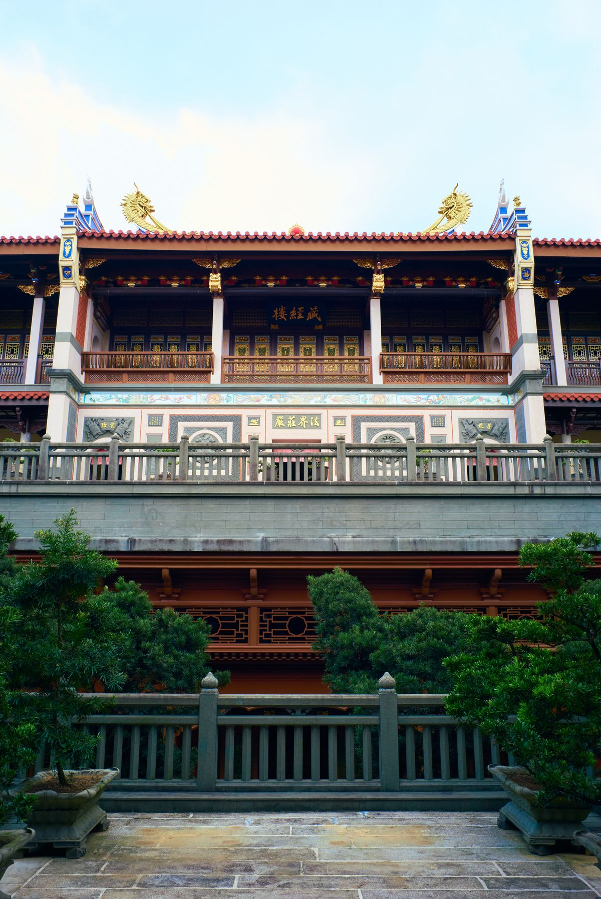
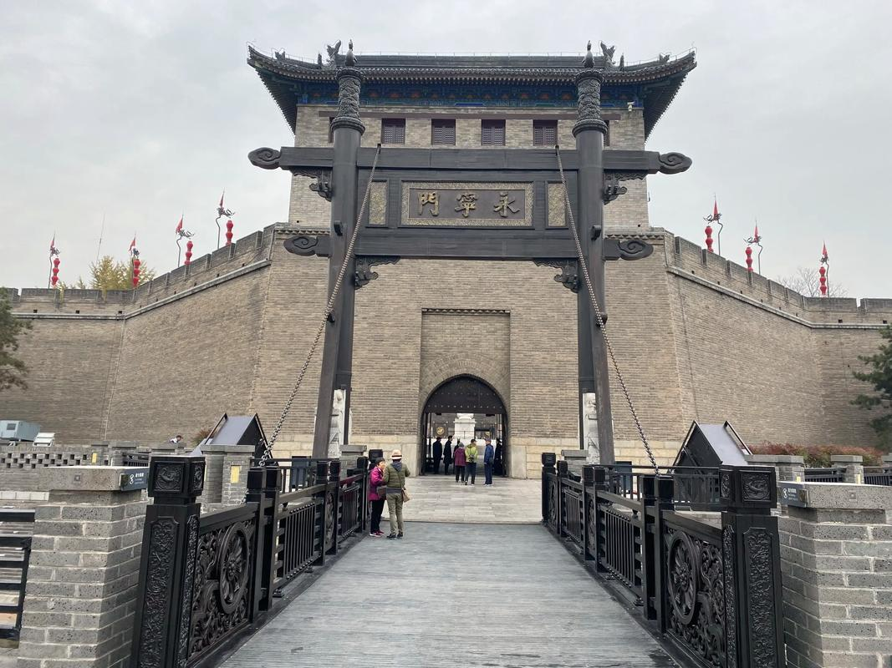
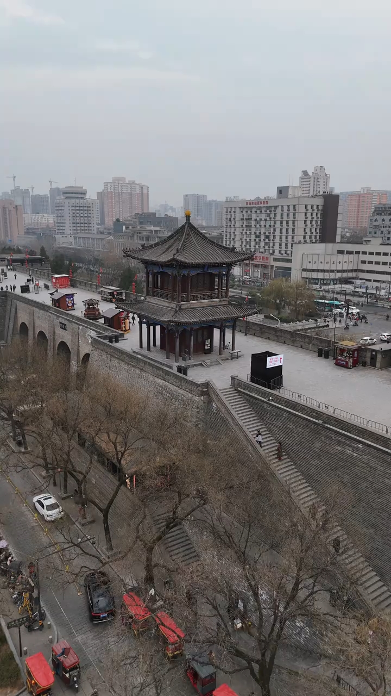
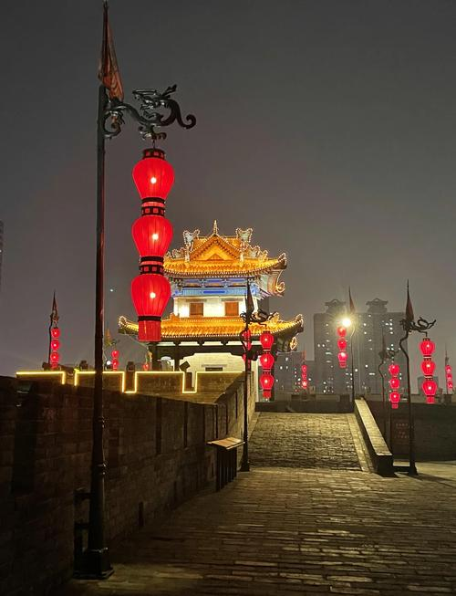
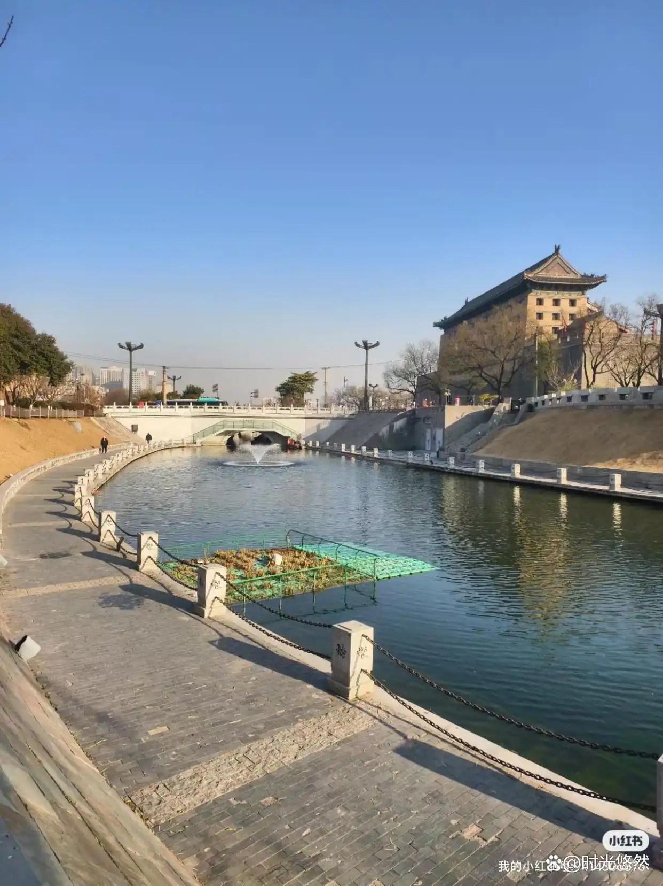
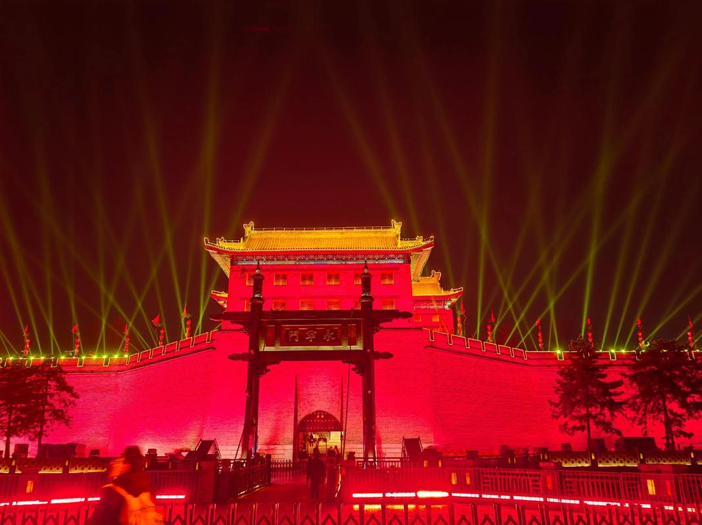

西安城墙是中国现存规模最大、保存最完整的古代城垣。它是在隋唐长安城皇城的基础上，于明洪武三年至十一年（1370—1378年）扩建而成。明太祖朱元璋采纳谋士朱升"高筑墙、广积粮、缓称王"的建议，在全国范围内大规模修筑城墙，西安城墙便是这一政策的产物。
此后历经明清两代多次修葺，清乾隆年间陕西巡抚毕沅对城墙进行了全面整修。近代以来，城墙虽经历战火与城市扩建的考验，但幸运地得以整体保存。1983年，西安市政府启动了大规模的城墙修复工程，修复了被毁的敌楼、箭楼，恢复了护城河，建成了环城公园，使古城墙重新焕发光彩。如今，城墙与环城公园、护城河共同构成了西安市中心一道壮丽的景观带。

西安城墙的防御体系设计极为精妙。城墙主体高12米，底宽15—18米，顶宽12—14米，墙体以黄土分层夯筑，外侧包砌青砖，极为坚固。城墙上共有敌台（马面）98座，每隔约120米一座，形成了严密的交叉火力网，确保无射击死角。
城墙四角各有一座角楼，四面各有一座城门——东长乐门、西安定门、南永宁门、北安远门，取"长安永定"之意。每座城门由闸楼、箭楼和正楼三重防御组成，瓮城设计使攻城之敌陷入四面受敌的困境。城外的护城河宽约30米，深约6米，构成了第一道防线。这种"城—墙—河"三位一体的防御体系，堪称中国古代军事工程的典范。
西安城墙不仅是军事防御工程，更承载着丰富的文化内涵。自1993年起，每年11月举办的"西安城墙国际马拉松赛"是世界唯一的古城墙马拉松赛事，被誉为"世界上最具历史文化韵味的马拉松"。城墙上的新春灯会始办于1984年，如今已成为西安春节文化的标志性活动。
环城公园是西安市民日常生活的重要空间，晨练、散步、秦腔自乐班、太极拳……城墙脚下演绎着最地道的市井生活。古老的城墙与鲜活的日常交织在一起，构成了一幅古老与现代和谐共生的城市画卷。
"秦时明月汉时关，万里长征人未还。但使龙城飞将在，不教胡马度阴山。" —— 王昌龄《出塞》
西安城墙虽建于明代，但它所代表的中原防御精神，可追溯至秦汉边关。




| 地址 | 西安市碑林区南大街2号（南门/永宁门为主要入口） |
|---|---|
| 开放时间 | 08:00 — 22:00（南门延长至24:00） |
| 门票 | 54 元（成人）/ 27 元（学生） |
| 交通 | 地铁 2 号线永宁门站 D2 口出即达南门 |
| 小贴士 | 推荐从南门（永宁门）登城，设施最完善；可租自行车环城墙骑行（约1.5—2小时），建议傍晚出发，日景夜景兼得 |